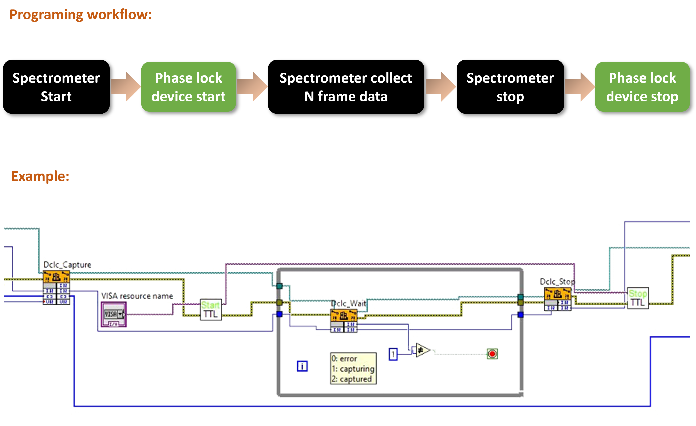

PulsearSpec
menu


设计用于泵浦探测实验，拥有超高的收集效率，以及极高的灵敏度.
联系我们 获取报价
该光谱仪是为瞬态吸收光谱实验设计的。通过使用我们的相位锁定设置来生成触发信号，可以非常容易地分离有无泵浦时的探针光谱。该设备配有USB端口，用于电源供应并连接到PC，通过此连接可以利用LabVIEW软件进行控制。特别设计的电路板针对高速处理进行了优化。这允许16位A/D分辨率与10 M/s的时钟，最大线速率可以达到4 kHz。此外，该设备的高效低功耗设计不仅最大程度地减少了能源使用，还显著提升了其寿命和可靠性。
 光谱仪设计
光谱仪设计
该光谱仪非常适合用于瞬态吸收光谱和采用泵浦-探测技术的实验，包括二维电子光谱（2D ES）。它能熟练地区分有无泵浦脉冲时的探针光谱。此外，我们提供一个LabVIEW子VI，用于与您现有的LabVIEW控制软件进行直接集成，提高了在各种实验设置中的使用便利性。


应用实例
| 名称 | 描述 |
|---|---|
| 检测器 | Hamamatsu S11639 |
| 光栅 | 600 g/mm, 500 nm 闪耀波长 |
| 输入光纤直径 | 100 um |
| 透镜焦距 | 100 mm |
| 检测器像素 | 2048 X 1 |
| 像素尺寸 | 14 X 200 um |
| 帧速 | 4000 fps (最大) |
| 动态范围 | 4000 |
| A/D 精度 | 16 bit |
| 连接方式 | USB 2.0 (用于供电) |
| 触发模式 | 内触发和外触发 |